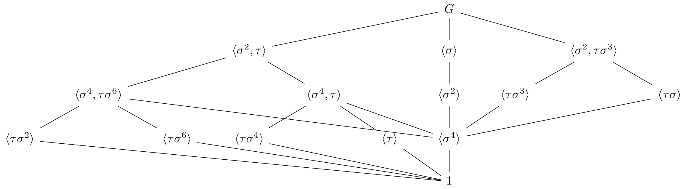

Episodi 8. El Teorema Fonamental
Enunciem i demostrem el teorema fonamental de la teoria de Galois. Acabarem amb diversos exemples concrets d’extensions, il·lustrant la correspondència de Galois.
8.1 Preliminars
Comencem amb un resultat que es segueix directament del Teorema 7.2.
Proposició 8.1 Sigui \(K\) un cos qualsevol. Sigui \(G\leq\Aut(K)\) un subgrup finit, i sigui \(F=K^G\). Aleshores \(K\) és Galois sobre \(F\), i \(\Gal(K/F) = G\).
Prova. Per definició d’\(F\), tenim \(G \leq \Aut(K/F)\), i només ens cal veure la igualtat. El Teorema 7.2 ens diu que \(|G|=[K\colon F]\), i ja hem vist \(|\Aut(K/F)|\leq [K\colon F]\). Per tant: \[ [K\colon F] = |G| \leq |\Aut(K/F)| \leq [K\colon F]. \] Per tant, totes les desigualtats són igualtats i, en particular \(|G| = |\Aut(K/F)|\).
Corol·lary 8.1 Si \(G_1\) i \(G_2\) són subgrups diferents d’\(\Aut(K)\), aleshores \(K^{G_1} \neq K^{G_2}\).
Prova. Trivial.
8.2 La correspondència de Galois
Sigui \(K/F\) una extensió finita de Galois. A cada subextensió \(K/M\) li podem associar el seu grup de Galois, \(\Gal(K/M)\). També podem associar a cada subgrup \(H\leq \Gal(K/F)\) el cos fix \(K^H\). El següent resultat ens diu que aquestes dues operacions són inverses mútuament.
Teorema 8.1 Sigui \(K/F\) finita Galois. Aleshores \(M\mapsto \Gal(K/M)\) i \(H\mapsto K^H\) estableixen una bijecció \[ \{\text{ subextensions } K/M/F\} \stackrel{1\colon 1}{\longleftrightarrow} \{\text{ subgrups } H \leq \Gal(K/F)\}. \] A més el grau \([M \colon F]\) es correspon amb l’ordre d’\(H\).
Prova. Hem de veure: 1. \(K^{\Gal(K/M)}= M\). Això és automàtic a partir de la proposició i del Corol·lari 7.3. 2. \(\Gal(K / K^H) = H\). Escrivim \(M=K^H\). Ja sabem que \(K/M\) és de Galois, i \(|\Gal(K/M)|= [K\colon M]\). A més, per definició tenim \(H\leq \Gal(K/M)\). Hem de demostrar la igualtat: donat \(\tau\in \Gal(K/M)\), veurem que \(K=\bigcup_{\sigma\in H} \Eq(\sigma,\tau)\). Pel Lema 7.2, algun dels \(\Eq(\sigma,\tau)\) ha de ser tot \(K\), i això ens diu que \(\tau\in H\). Per tant, només ens cal comprovar que per tot \(\alpha\in K\), hi ha algun \(\sigma\in H\) tal que \(\sigma(\alpha)=\tau(\alpha)\). Considerem el polinomi \[ f(x) = \prod_{\sigma \in H} (x - \sigma(\alpha)) \in K[x]. \] Fixem-nos que \(\sigma(f)=f\) per tot \(\sigma\in H\) i per tant \(f(x)\in K^H[x] = M[x]\). Com que \(\tau\) fixa \(M\), tenim que \(\tau(f)=f\). Però aleshores \(\tau(\alpha)\) ha de ser una arrel de \(f\), és a dir, \(\tau(\alpha)=\sigma(\alpha)\) per algun \(\sigma\in H\), com volíem.
Hem vist que si \(K/M/F\) és Galois aleshores \(K/M\) també ho és. Què podem dir de l’extensió \(M/F\)?
Proposició 8.2 Sigui \(K/M/F\) una torre amb \(K/F\) Galois, posem \(G=\Gal(K/F)\). Aleshores són equivalents:
- \(M/F\) és Galois.
- \(H=\Gal(K/M)\) és un subgrup normal de \(G\).
- \(\sigma(M)\subseteq M\) per a tot \(\sigma\in G\).
En aquest cas, \(\Gal(M/F) \cong G / H\).
Prova. Sigui \(H = \Gal(K/M)\). \(1 \implies 2\): Sigui \(\sigma\in G\). Si \(\alpha\in M\) té polinomi mínim \(f(x)\in F[x]\), aleshores \(\sigma\) en permuta les seves arrels i, en particular, \(\sigma(\alpha) \in M\). Per tant \(\sigma\) restringeix a un morfisme de \(M\), que ja hem vist que és un automorfisme. Hem construit doncs una aplicació \(G\to H\), i és fàcil comprovar que és un morfisme de grups. El seu nucli és doncs un subgrup normal, format per aquells automorfismes \(\sigma\in G\) que fixen \(M\), és a dir, és justament \(\Gal(K/M)\).
\(2 \implies 3\): Sigui \(\sigma \in G\). Per definició, \(\sigma(M) \in K^{\tilde H}\), on \(\tilde H = \sigma H \sigma^{-1}\). Com que \(H\) és normal \(\tilde H=H\) i \(K^{\tilde H} = K^H = M\).
\(3 \implies 1\): escrivim \(M = F(\alpha_1,\ldots \alpha_n)\), i considerem \[ B = \{\sigma(\alpha_i) ~|~ \sigma \in G, i=1,\ldots,n\}. \] Aleshores \(f(x)=\prod_{\beta in B} (x-\beta)\) és un polinomi separable amb coeficients a \(F\). La hipòtesi és que \(B\subseteq M\) i, per tant, \(M\) és el cos de descomposició de \(f\).
8.3 Operacions de reticle
Per acabar d’entendre bé la correspondència de Galois, relacionem operacions conegudes entre cossos i entre grups. ::: {.proposition name=““} Sigui \(K/F\) Galois amb \(G = \Gal(K/F)\). Sigui \(M_1\) i \(M_2\) dues subextensions, amb \(H_i=\Gal(K/M_i)\). Aleshores:
- \(\Gal(K/M_1M_2) = H_1 \cap H_2\), i
- \(\Gal(K/(M_1\cap M_2)) = \langle H_1, H_2\rangle\). ::: ::: {.proof} Directa, per definició. :::
Podem resumir tot l’episodi en un sol resultat:
Teorema 8.2 (Teorema fonamental de la teoria de Galois) Sigui \(K/F\) una extensió de Galois finita amb grup de Galois \(G\). Hi ha una bijecció entre \[ \{\text{subcossos $K/M/F$}\} \stackrel{1\colon 1}{\longleftrightarrow} \{subgrups H \leq G\} \] donada per \(M\mapsto H = \Gal(K/M)\) i \(H\mapsto M = K^H\) que satisfà:
- (gira les inclusions) \(M_1 \subseteq M_2\) si i només si \(H_2\leq H_1\).
- (preserva els graus) \([K\colon M] = |H|\) i \([M \colon F] = [G \colon H]\).
- (preserva normalitat) \(M/F\) és Galois si i només si \(H\) és normal en \(G\).
- (gira els reticles) \(M_1M_2 \leftrightarrow H_1\cap H_2\) i \(M_1\cap M_2 \leftrightarrow \langle H_1, H_2\rangle\).
8.4 Exemples
8.4.1 Exemple d’una extensió biquadràtica
Considerem primer el cos \(K=\QQ(\sqrt{2}, \sqrt{3})\), de grau \(4\) sobre \(\QQ\). Els cossos \(\QQ(\sqrt{2})\), \(\QQ(\sqrt{3})\) i \(\QQ(\sqrt{6})\) en són subcossos. Qualsevol subcos no trivial ha de ser de grau \(2\), per la fórmula de les torres. Podem intentar veure de manera elemental que els tres que hem esmentat són els únics, però això ens ho garanteix el teorema fonamental: el grup de Galois de \(\QQ(\sqrt{2},\sqrt{3})\) és \(V_4\cong C_2\times C_2=\langle \sigma,\tau\rangle\), on \(\sigma(\sqrt{2})=-\sqrt{2}\) i \(\sigma(\sqrt{3})=\sqrt{3}\), i \(\tau(\sqrt{2})=\sqrt{2}\) i \(\tau(\sqrt{3})=-\sqrt{3}\), i té reticle de subgrups \[ \xymatrix{ &\langle \sigma, \tau\rangle \ar@{-}[dl]^2\ar@{-}[d]_2\ar@{-}[dr]^2&\\ \langle \sigma\rangle & \langle \sigma\tau\rangle & \langle \tau\rangle\\ &1\ar@{-}[ul]^2\ar@{-}[u]_2\ar@{-}[ur]_2& } \] Calculant els cossos fixos pels tres grups intermitjos obtenim: \[ K^{\langle\sigma\rangle} = \QQ(\sqrt{3})\text{, } K^{\langle\sigma\tau\rangle} = \QQ(\sqrt{6}),\text{ i } K^{\langle\tau\rangle} = \QQ(\sqrt{2}). \]
8.4.2 Exemple d’una extensió de tipus \(S_3\)
Considerem el cos de descomposició del polinomi \(x^3-2\), que conté \(\sqrt[3]{2}\) i \(\zeta_3\). De fet, el cos de descomposició és precisament \(\QQ(\sqrt[3]{2}, \zeta_3)\). Tenim els subcossos obvis \(\QQ(\zeta_3)\) (de grau \(2\)) i els tres conjugats \(\QQ(\sqrt[3]{2})\), \(\QQ(\zeta_3\sqrt[3]{2})\) i \(\QQ(\zeta_3^{-1}\sqrt[3]{2})\). Calculem el grup de Galois d’aquesta extensió. Fixem-nos que un automorfisme ha de permutar les arrels de \(x^3-2\) i també les de \(x^2+x+1\). Considerarem el morfisme \(\sigma\) que fixa les arrels de la unitat, i que envia \(\sqrt[3]{2} = \zeta_3\sqrt[3]{2}\), i també el morfisme \(\tau\) que fixa \(\sqrt{3}[2]\) i que envia \(\zeta_3\mapsto \zeta_3^{-1}\). Fixem-nos que \(\tau\) té ordre \(2\), i que \(\sigma^2(\sqrt[3]{2}) = \sigma(\zeta_3\sqrt[3]{2}) = \zeta_3^2\sqrt[3]{2}\) i \(\sigma^3=\id\). Per tant, el grup de Galois té ordre \(6\) i està generat per aquests dos elements. Observem també que \(\sigma\tau(\sqrt[3]{2}) = \zeta_3\sqrt[3]{2}\), mentre que \(\tau\sigma(\sqrt[3]{2}) = \tau(\zeta_3\sqrt[3]{2}) = \zeta_3^{-1}\sqrt[3]{2}\). Per tant, \(\sigma\) i \(\tau\) commuten i \(G \cong S_3\).
Ara podem calcular el reticle de subgrups de \(S_3\), i obtenim \[ \xymatrix{ &\langle\sigma,\tau\rangle\ar@{-}[ddl]\ar@{-}[dr]\ar@{-}[drr]\ar@{-}[drrr]\\ &&\langle\tau\rangle&\langle \tau\sigma\rangle & \langle \tau\sigma^2\rangle\\ \langle\sigma\rangle&\\ & 1\ar@{-}[ul]\ar@{-}[uur]\ar@{-}[uurr]\ar@{-}[uurrr] } \]
El reticle de subcossos de \(\QQ(\sqrt[3]{2}, \zeta_3)\) corresponent és: \[ \xymatrix{ &\QQ\ar@{-}[ddl]\ar@{-}[dr]\ar@{-}[drr]\ar@{-}[drrr]\\ &&\QQ(\sqrt[3]{2})&\QQ(\zeta_3\sqrt[3]{2}) & \QQ(\zeta_3^{-1}\sqrt[3]{2})\\ \QQ(\zeta_3)&\\ & \QQ(\sqrt[3]{2}, \zeta_3)\ar@{-}[ul]\ar@{-}[uur]\ar@{-}[uurr]\ar@{-}[uurrr] } \]
8.4.3 Exemple d’una extensió de de grau 16
Considerem el grup de Galois del polinomi irreductible \(x^8-2\). Les arrels d’aquest polinomi són \[ \zeta^i \sqrt[8]{2},\quad i=0,\ldots,7, \] on \(\zeta=\zeta_8=e^{\frac{2\pi i}{8}}\) és una arrel primitiva de la unitat. Observem que tenim \[ \QQ \subset \QQ(\sqrt{2}) \subset \QQ(\sqrt[4]{2})\subset \QQ(\alpha)\subset K=\QQ(\zeta,\alpha), \] i que cada extensió de les de sobre és de grau \(2\) sobre l’anterior. Per justificar l’última extensió, podem trobar el polinomi mínim de \(\zeta\) sobre \(\QQ(\alpha)\). Sabem que \(\zeta^2=i\), i per tant \(\zeta=\frac{1}{\sqrt{2}}(1+i)\). Per tant, \(\zeta\) satisfà el polinomi \[ x^2 - \sqrt{2}x + 1 = 0. \] Fixem-nos que \(\QQ(\alpha)\) és un subcos de \(\RR\) i en canvi \(\QQ(\alpha,\zeta)\) no. Per tant, en deduïm que \([K\colon \QQ] = 16\). De fet, com que \(\zeta=\frac{1}{\sqrt{2}}(1+i)\), podem descriure \(K\) de manera més senzilla com \(K=\QQ(\alpha,i)\). Intentem descriure el seu grup de Galois. Tot automorfisme ve determinat per la imatge de \(\alpha\) i de \(i\). La imatge d’\(\alpha\) ha de ser de la forma \(\zeta^j\alpha\) per algun \(0\leq j \leq 7\), mentre que la imatge de \(i\) ja de ser \(\pm i\). Com que només hi ha \(16\) possibilitats en total i el grup de Galois ha de tenir ordre \(16\), totes elles es donen. Per tant, \[ \Gal(K/\QQ) = \{1,\sigma_1,\sigma_2,\ldots,\sigma_7,\tau,\tau\sigma_1,\ldots,\tau\sigma_7\}, \] on \(\sigma_j\) fixa \(i\) i envia \(\alpha\) a \(\zeta^j\alpha\), i \(\tau\) fixa \(\alpha\) i envia \(i\) a \(-i\).
Podem calcular també l’acció de \(\sigma=\sigma_1\) i \(\tau\) en l’arrel \(\zeta\), fent servir \[ \zeta = \frac{\sqrt{2}}{2} (1+i) = \frac{1}{2}\alpha^4(1+i). \] Per tant \(\sigma(\zeta) = \frac{1}{2} (-1) \alpha^4 (1+i) = -\zeta\), i \(\tau(\zeta) = \frac{1}{2}\alpha^4(1-i) = \bar{\zeta} = \zeta^{-1}\).
Calculant els productes \(\sigma^i\) i \(\sigma^i\tau\) veiem també que \(\Gal(K/\QQ)\) està generat per \(\sigma\) i \(\tau\), i de fet \[ \Gal(K/\QQ)= \langle \sigma, \tau ~|~ \sigma^8=\tau^2=\sigma\tau\sigma^{-3}\tau=1\rangle. \] Aquest subgrup s’anomena , i el seu reticle de subgrups és:

TODO: calcular el reticle de subcossos corresponent.
Remarca. És important adonar-se que no n’hi ha prou en assignar valors als generadors d’una extensió per definir un automorfisme, ja que hi pot haver relacions amagades entre els generadors. Per exemple, si \(\theta=\sqrt[8]{2}\), tenim \(\theta^4 = \zeta_8 + \zeta_8^{-1}\) i per tant no totes les tries \(\theta\mapsto \theta\zeta_8^i\) i \(\zeta_8\mapsto \theta_8^j\) amb \(j\) senar donen lloc a automorfismes.